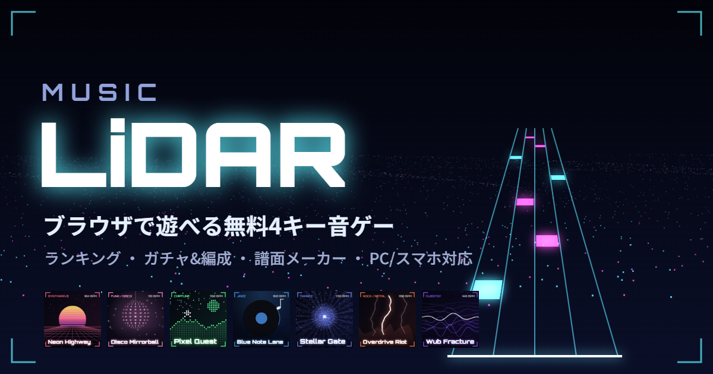

MUSICLiDAR

MUSIC LiDAR(ミュージック ライダー)は、ブラウザだけで遊べる無料の4キー音ゲーです。奥から手前へ流れてくるノーツを、判定ラインに重なったタイミングで叩きます。LiDAR(レーザーで周りを点群として測る技術)をイメージした、点群とネオンの世界観が特徴です。PC・スマホ・タブレットに対応し、アプリのインストールやアカウント登録なしですぐに遊べます。
左のレーンから D F J K キーで叩きます。選曲画面では ↑↓ で曲、←→ で難易度、Enter でプレイ。ゲーム中は Esc で一時停止、リザルト画面で R を押すとすぐにリトライできます。
画面を横に4分割したそれぞれのレーンをタップします。複数の指で同時押しもでき、指を横にスライドすると隣のレーンへ移れます。一時停止は左上の ❚❚ ボタンです。
判定は PERFECT・GREAT・GOOD・MISS の4段階で、スコアは100万点満点。ランクは MAX / S+ / S / AA / A / B / C / D です。MISSなしでクリアすると FULL COMBO、すべて PERFECT なら ALL PERFECT。FAST / SLOW 表示で早押し・遅押しの癖も分かります。
ハイスピード(ノーツの速さ)、BGM・タップ音の音量、レーン幅、判定ラインの位置、演出の強さ(オフ/控えめ/派手)を調整できます。
初心者向けのやさしい曲から、和風・ユーロビート・レゲエ・トラップ・エレクトロスウィング・オーケストラ・スカパンク・ローファイ・シティポップ・ボサノバ・テクノ・フューチャーベース・ハードスタイル・ジャズ・ロック・トランス・ダブステップ・チップチューンなどいろいろなジャンル、BPM220の鬼畜曲、譜面が止まったり加速したりするギミック曲まで。各曲 EASY / NORMAL / HARD の3難易度です。曲名をクリックすると、その曲を選んだ状態でゲームが開きます(曲ごとのURLは友だちへの共有にも使えます)。
| 曲名 | ジャンル | BPM | レベル(EASY / NORMAL / HARD) |
|---|---|---|---|
| First Light | 初心者向け | 90 | 1 / 2 / 4 |
| Hello, Lane | 初心者向け | 110 | 1 / 3 / 5 |
| Plaza 1995 | ヴェイパーウェイヴ | 78 | 1 / 2 / 4 |
| Rainy Window | ローファイ・ヒップホップ | 82 | 1 / 3 / 5 |
| Island Signal | レゲエ | 76 | 1 / 3 / 5 |
| Neon Highway | シンセウェイヴ | 104 | 2 / 4 / 8 |
| Disco Mirrorball | ファンク・ディスコ | 118 | 2 / 4 / 9 |
| Dembow Lights | レゲトン | 96 | 2 / 4 / 8 |
| Sunset Bossa | ボサノバ | 128 | 2 / 5 / 7 |
| Midnight Avenue | シティポップ | 112 | 2 / 5 / 9 |
| Cloud Point | チル | 100 | 2 / 5 / 8 |
| Pixel Quest | チップチューン(8bit) | 150 | 3 / 7 / 10 |
| Pulse Grid | ハウス | 126 | 3 / 6 / 9 |
| Swing Circuit | エレクトロスウィング | 124 | 3 / 5 / 8 |
| Low Orbit | トラップ | 140 | 3 / 6 / 11 |
| Iron Pulse | テクノ | 132 | 3 / 6 / 10 |
| Sakura Lattice | 和風 | 140 | 3 / 6 / 10 |
| Last Horizon | オーケストラ | 120 | 3 / 6 / 9 |
| Blue Note Lane | ジャズ(スウィング) | 168 | 3 / 5 / 10 |
| Stellar Gate | トランス | 138 | 3 / 6 / 11 |
| Sky Prism | フューチャーベース | 150 | 3 / 7 / 11 |
| LiDAR Rush | ドラムンベース | 174 | 4 / 7 / 11 |
| シャイニングスター(音楽:魔王魂) | ポップ | 158 | 3 / 6 / 9 |
| Wub Fracture | ダブステップ | 140 | 3 / 6 / 10 |
| Offbeat Skater | スカパンク | 176 | 3 / 7 / 11 |
| Night Drift 95 | ユーロビート | 156 | 4 / 7 / 11 |
| Overdrive Riot | ロック・メタル | 180 | 3 / 8 / 12 |
| Hard Reflector | ハードスタイル | 150 | 4 / 7 / 11 |
| Sugar Rush Scan | ハッピーハードコア | 172 | 4 / 8 / 12 |
| Freeze Frame | ギミック(停止・変速・隠し) | 160 | 4 / 8 / 12 |
| Hyper Scan Breaker | ハイパーコア | 190 | 5 / 9 / 13 |
| Final Protocol | ボス戦(停止・変速・隠し) | 200 | 4 / 9 / 13 |
| Overclock Ω | スピードコア | 220 | 6 / 10 / 14 |
手持ちの音声ファイル(mp3・wav・oggなど)をドラッグ&ドロップすると、曲を解析して自動で譜面を作って遊ぶこともできます。
内蔵曲は曲・難易度ごとにオンラインランキングがあります。ランキングには、キャラの編成効果を含まない「素のスコア」が登録されるので、純粋な腕前で競えます。
名前とパスワードでアカウントを作ると、データがサーバーに保存され、別の端末からも続きを遊べます。
ブラウザ上で譜面を作れるエディタを搭載しています。
内蔵曲の譜面は「みんなの譜面」に投稿でき、他のプレイヤーが遊んだり、いいねしたりできます。譜面ごとのランキングもあります。
すべて無料です。課金要素はありません。ガチャもゲーム内のコインだけで引けます。
Bluetoothイヤホンは遅延が大きいことがあります。有線イヤホンやスピーカーで試してみてください。iPhoneはマナーモードだと音が出ないことがあります。
ログインしない場合は端末のブラウザに、ログインした場合はサーバーに保存されます。